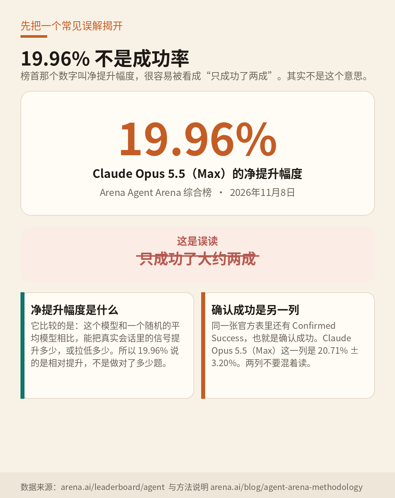
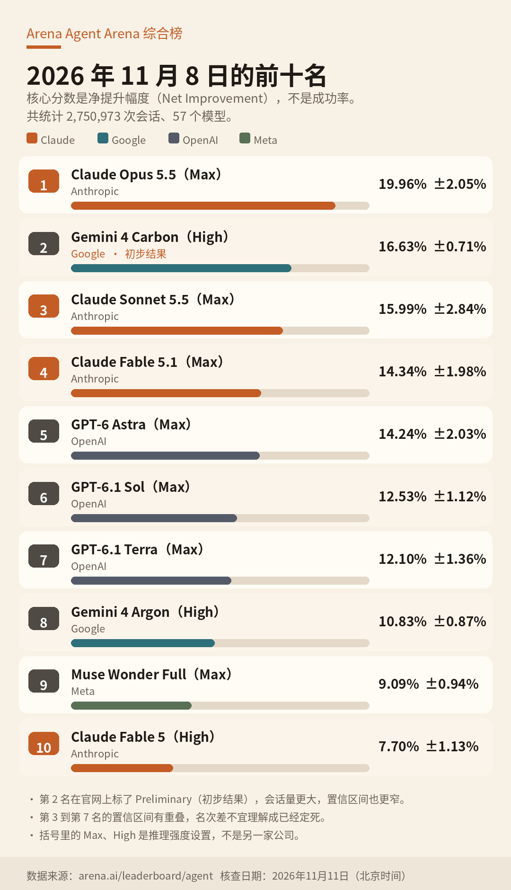
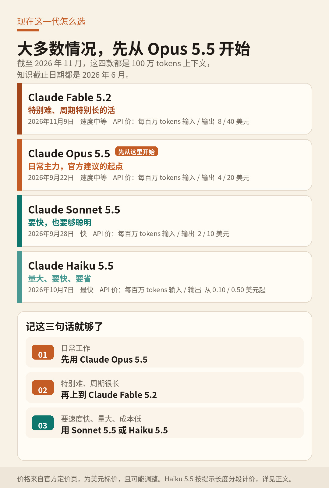

刀哥
先看榜，再认识 Claude
先看榜，再认识 Claude。自制配图。
你最近要是刷到 AI，大概总会撞上这个名字：Claude。有人说它特别能干活，有人说它讲话比较谨慎，也有人上来就把它跟 ChatGPT 放一起比。
这些说法其实都沾点边。不过我跟朋友讲的时候，一般不先甩结论，而是先把一张能公开查到的榜摊开。因为到了 2026 年，只看“聊得漂不漂亮”已经不够了，还得看它能不能把活干完。
先把一个词说清楚。现在大家口头上说的 Agent，不是什么玄乎的新物种。说白了，就是会动手的 AI：它不只陪你聊天，还能写代码、改文件、调用工具，在电脑或浏览器里一步一步把事情做完。
只会聊天，还是会动手的 Agent。自制配图。
我建议你看的，是 Arena 的 Agent Arena 综合榜。官网在这里：https://arena.ai/leaderboard/agent 。Arena 就是以前那个很有名的 LMSYS Chatbot Arena 的后续平台，现在榜单放在 arena.ai。
这份综合榜统计了 2,750,973 次会话，覆盖 57 个模型。它看的不是谁更会陪聊，而是模型在真实工作会话里的表现。快照日期以官网打印的为准：2026 年 11 月 8 日。
核心分数叫 Net Improvement，我把它叫“净提升幅度”。这个名字有点绕，而且特别容易看错，所以我先把坑揭了。
它不是任务成功率，也不是大家更熟悉的 Elo 评分。Arena 用的是一种因果追踪方法，估算一个模型相比“随机抓来的平均模型”，能把真实会话里的信号提升多少，或拉低多少。
所以，榜首 Claude Opus 5.5（Max）的 19.96%，绝不是“它只成功了两成”。同一张官方表里还有另一列，叫 Confirmed Success，也就是确认成功，它的分数是 20.71% ± 3.20%。另外，第 3 名到第 7 名的置信区间是叠在一起的，看着名次挨个排，其实差距没有那么板上钉钉。
还有个小细节：模型名字后面的 Max、High，是官方标注的推理强度，不是另一家公司。你就把它理解成“这台机器这次开到了哪一档马力”。

19.96% 不是成功率。数据来源：arena.ai/leaderboard/agent ，方法说明：arena.ai/blog/agent-arena-methodology。

Arena Agent Arena 综合榜前十（净提升幅度，2026 年 11 月 8 日快照）。第 2 名为官方 Preliminary（初步结果）。数据来源：arena.ai/leaderboard/agent。
这张快照里，有两件事挺值得单独说。
第一，第 2 名 Gemini 4 Carbon（High）在官网上标了 Preliminary，也就是初步结果。它的会话量更大，置信区间也更窄，数据上其实更“稳”一些。
第二，Claude 在这张表上非常显眼：第 1、第 3、第 4、第 10 名都是它。往后再翻，还能看到 Claude Opus 5（Max）排第 11，净提升 7.50% ± 1.29%；Claude Sonnet 5（High）排第 21，净提升 2.06% ± 1.18%；Claude Haiku 5.5（High）排第 27，净提升 0.43% ± 1.03%。
你可能马上会问：不是刚出了更新的 Claude Fable 5.2 吗？它怎么不在这张表上？
因为这张榜的截止日期是 11 月 8 日，Fable 5.2 是 11 月 9 日才发布的，刚好晚了一天。这个时候要是随手给它排个 Agent Arena 名次，那就是编的。
想看它已经公开的实验室成绩，可以另看这份 Artificial Analysis 综合智力榜：https://artificialanalysis.ai/leaderboards/models 。它是把知识工作、编程、科学和通用能力等 9 项评测等权合成一个大约 0 到 100 的分数，里面包含不少代理类评测，但不是纯 Agent 会话榜。
我在 2026 年 11 月 11 日查官方榜时，Claude Fable 5.2（max）以 65 分排在第 1；同一模型的 xhigh 和 high 设置都是 62 分，分列第 2、第 3；后面是 Gemini 4 Carbon（high）60 分，Claude Opus 5.5（max）59 分。官方数字就是 65，你要是在别处看到 64.6，那不是官网的写法。这家机构会把不同推理强度分开排名，所以前十里出现同一模型的好几个配置，是正常的。
再多说一句，免得一会儿看花眼。Arena 还有一份更有名的聊天偏好榜，叫 Text Arena：https://arena.ai/leaderboard/chat/text ，快照日期是 2026 年 11 月 9 日。那是人类两两比较聊天回答后打出来的分，不是 Agent 榜。那份榜上谷歌和 Meta 更靠前，Claude 最好的名次是 Claude Opus 5.5（High）的第 4 名，分数是 1506 ± 6。
三张榜，三把尺子。网上要是有人把它们捏成一句“全球第一”，基本就是在偷换概念。
Claude 是 Anthropic 做出来的一组前沿大语言模型。官方文档写得很直白：a family of state-of-the-art large language models developed by Anthropic。
对普通人来说，它就是个能聊天、能写作、能帮你想事情的助手。对开发和团队来说，它还能写代码、处理知识工作，并在你授权之后，用工具、终端、电脑和浏览器把连续任务做完。
Anthropic 这家公司有点特别，它是一家公益公司，英文叫 Public Benefit Corporation。官方宗旨是：“the responsible development and maintenance of advanced AI for the long-term benefit of humanity.” 翻译过来就是：负责任地开发并维护先进人工智能，以谋求人类的长远利益。它给自己的定位，是把安全放在前沿的人工智能研究与产品，想做的是可靠、可解释、也可引导的系统。
联合创始人里，最常被提到的是首席执行官 Dario Amodei，和总裁 Daniela Amodei。Daniela 还担任董事会主席。一起创办公司的还有 Tom Brown、Jack Clark、Jared Kaplan、Sam McCandlish、Chris Olah。
官方页面没有打印精确成立日期。能确定的是，2021 年 5 月 28 日，Anthropic 已经在官网宣布拿到 1.24 亿美元 A 轮融资。至少到那时，这家公司已经在运转了。
Claude 还有个常被提起的特点：它家训练模型时，会先写下一组公开原则，有点像一份宪法，再按这些原则去调模型的脾气。这套方法在 2023 年被称作 Constitutional AI，也就是宪法式人工智能。官方希望它做到三件事：有帮助、诚实、不造成伤害。他们也希望这些价值标准更容易被看懂，也更容易调整。
现行宪法里，万一几件事打架了，优先级是这样排的：先总体上安全，再总体上合乎伦理，再遵守 Anthropic 的指南，最后才是真正有帮助。说人话就是，它会先考虑“别出事”，再考虑“尽量帮你”。Anthropic 自己也挺坦诚：训练模型很难，Claude 的实际表现不一定总能达到宪法里的理想。
名字听着容易晕，其实可以记一条很实用的建议。官方的说法是：大多数工作，先从 Claude Opus 5.5 开始。它就是日常主力。只有当任务特别难、周期特别长，或者你把 Opus 5.5 的推理强度开高了仍然达不到要求时，再上到 Claude Fable 5.2。要是你更在乎速度和成本，就往下选 Sonnet 或 Haiku。

现在这一代 Claude 怎么选。API 价格为官方美元标价（每百万 tokens 输入 / 输出），可能调整。Haiku 5.5 按提示长度分段计价，详见正文。
截至 2026 年 11 月，当前主推的四款模型都能看懂文字和图片，能输出文字，也支持多语言、视觉理解和工具使用。上下文窗口都是 100 万 tokens，同步输出上限都是 12.8 万 tokens。按官方说明，100 万 tokens 大约相当于 55.5 万个英文单词，或 250 万个 Unicode 字符。你大致可以把它理解成：一次能塞进去很长很长的材料。
它们的知识截止日期都是 2026 年 6 月。也就是说，模型自己“记住”的世界，停在那年 6 月。打开网页搜索后，它可以去查更新的信息，但别指望它自动知道今天发生的每件事。
Haiku 5.5 的价格还按提示长度分段：提示在 10 万 tokens 及以内，每百万 tokens 输入 0.10 美元、输出 0.50 美元；超过 10 万，就是 0.50 / 2.50 美元。
Fable 5.2 还有个“双胞胎”，叫 Claude Mythos 5.2。官方说二者底层模型相同，但 Mythos 在网络安全和生物学方面的防护更少，只通过网络验证项目和生命科学验证项目有限开放。API 价格一样，也是每百万 tokens 输入 8 美元、输出 40 美元。咱们普通人在 claude.ai 上遇到的，一般是防护更完整的 Fable。
最直接的入口是 https://claude.ai ，还有官方的网页、桌面、iOS 和 Android 应用。免费版可以限量聊天，也能用网页搜索、处理文件、执行代码，以及记忆、连接器和 Artifacts。Claude Design、Slides、Docs 这些做设计、做幻灯片、做文档的功能，免费版也有。不过免费版只能用到 Sonnet 和 Haiku，没有 Opus 和 Fable。
付费之后，还可以用 Claude Code。它是官方的编程助手，能在终端、IDE、Slack、网页、手机和桌面里帮你修 bug、写测试，甚至做跨好几天的迁移。它在改文件或执行命令前，通常会先问你一声。它也支持 MCP，全称是 Model Context Protocol，简单说就是让模型去连接外部工具服务的一套协议。
如果你是开发者，还可以通过 Claude API 来调用，也可以在 Amazon Bedrock、Google Cloud 和 Microsoft 的云平台上用。Fable 5.2 发布当天，官方写明这些平台已经上线。另外还有 Chrome 里的浏览助手，授权之后可以帮你打开网页、填表、完成浏览器里的任务；Pro 及以上和团队版，也能跟 Microsoft 365、Outlook 集成。
团队版面向 2 到 150 人，企业版再往上加更完整的管理、安全和合规能力。不过官方帮助文档写得很清楚：团队版目前只在部分支持地区提供。我这次核对的时候，没有确认中国大陆能不能官方直接使用 claude.ai，所以这里不打包票，说“打开就能用”。
这块我先把不该说的话挡在前面。没有足够出处，就不要说“Claude 一定比 GPT 更会写文章”。更不要把不同榜单揉成一句“全面第一”。比较靠谱的，是下面这几条。
第一，它的谨慎不是包装出来的，是训练时就往这个方向推的。宪法式训练和公开宪法，让它更常把安全和伦理放在“尽可能有帮助”前面。好处是，高风险的请求更容易被拦住；代价是，有时候你会觉得它拒绝得有点多。Fable 5.2 发布时，Anthropic 说早期测试里，误拦大概比 Fable 5.1 少了 55%，同时相关防护仍然同样严格。注意，这是公司自己的测试结果。当 Fable 拦截某些网络安全或生物学问题时，用户会转而收到来自 Opus 4.8 或 Opus 5 的回复。
第二，它被做成了能干活的 Agent，而不只是一个聊天窗口。官方工具包括电脑使用、浏览器使用、bash、文本编辑、网页搜索、网页抓取和代码执行。Claude Code 和 Chrome 扩展，都是官方自己做的第一方 Agent。MCP 则让模型去调用远程工具。官方也说明了，API 里的 MCP 连接器还是测试功能，而且不在零数据保留协议的覆盖范围内。
第三，它能一次读进去很多东西，也给日常工作留了不少空间。当前主推模型的上下文窗口是 100 万 tokens，适合一次性放入很长的材料。产品里还有 Projects、Artifacts、Memory、Skills、连接器和语音模式。免费版最多 5 个 Projects；个人付费后就不再限数量；要多人协作分享，得用团队或企业版。Research 从 Pro 开始才有。
第四，Fable 5.2 的那些亮眼能力数字，目前主要来自 Anthropic 自己的发布说明。比如官方提到，它在编码、推理和视觉上有提升，生成速度可比 5.1 快最多 30%。发布帖还列了多项内部或合作评测，也讲了一些科学和工程演示。这些我都会标成“据 Anthropic 介绍”，先不把它写成已经被第三方榜单独立确认的结论。
价格这块，我直接说 2026 年 11 月 11 日在官方定价页看到的美元标价。标价不含税，而且可能调整。官方也写了，价格、币种和税务处理会因地区而异。我没查到面向中国大陆的官方人民币价，所以不擅自换算。
个人方案最好记这四档：
Free 是 0 美元。Pro 如果年付，折合每月 17 美元，但要一次性先付 200 美元；如果按月付，是每月 20 美元。Max 在定价页上标的是 100 美元，Ultra 标的是 200 美元，官方 FAQ 写明这两档按月计费。
用量不是按“能发多少条消息”来算的。官方的说法是：Pro 比 Free，在每个 5 小时会话里至少多 5 倍用量；Max 是 Pro 的 5 倍；Ultra 对已验证账户取消了 5 小时限制，周用量是 Pro 的 10 倍。Claude Code 包含在所有付费方案里，而且和聊天共用额度。Max 能用 Fable，但官方写明，最高只用到每周额度的一半。
如果是团队：标准席位年付每人每月 20 美元，月付 25 美元；高级席位年付每人每月 100 美元，月付 125 美元。企业版是每个席位每月 20 美元，再另按 API 用量计费，按年结算。
开发者看 API，标准价是每百万 tokens 的输入和输出：Fable 5.2 为 8 / 40 美元，Opus 5.5 为 4 / 20 美元，Sonnet 5.5 为 2 / 10 美元，Haiku 5.5 按前面说的分段计价。推理开得越高，通常越贵。比如 Artificial Analysis 的表上，Fable 5.2（max）单次任务成本标到了 26.54 美元；Agent Arena 里，Opus 5.5（Max）的任务成本中位数是 6.02 美元。从 Claude 4.7 和 Mythos Preview 开始，官方还换了新分词器，说同一段文字大约会多计 30% 的 tokens。也就是说，同样的字，账单可能比老一代更高。
Claude 会出错，也会在不该自信的时候显得很确定。这一点，官方并不回避。
所有个人和团队席位都有用量上限，只是没有对外公布固定的消息条数。Fable 会拦截高风险的网络和生物学请求；Mythos 那条通道，也不是对所有人开放的。
隐私上也不要自动脑补成“绝对不用你的任何数据”。个人免费和付费方案里，模型训练默认是可退出的，也就是 Opt-out；团队和企业默认不用于训练。但官方也提到，反馈、错误报告，或你明确授权的数据，有可能进入训练混合。
最后还有两个特别容易写错的地方，我一并说清楚。一是上下文窗口：模型文档和定价页写的是当前型号支持 100 万 tokens，但有一份 11 月 11 日仍显示刚更新过的团队帮助里，还出现过 20 万的表述。更稳妥的做法，是以模型文档为准。二是榜单会变。Fable 5.2 都已经发布了，Agent Arena 综合榜很可能很快就会改写。这篇文章记下的，是 11 月 11 日核查到的快照，不是一张能贴一辈子的成绩单。
如果你是第一次用，记住这三句话就够了：日常工作，先从 Opus 5.5 开始；活特别重、周期特别长，再考虑 Fable 5.2；要速度快、量大、成本低，就用 Sonnet 5.5 或 Haiku 5.5。
先认榜单，再认产品和限制。这样去理解 Claude，会比记住一句“最强”靠谱得多。
署名：刀哥。本篇为测试稿，不设《Agent 图鉴》篇号。
主要来源：Arena Agent Arena 综合榜 https://arena.ai/leaderboard/agent （快照 2026 年 11 月 8 日）；Agent Arena 方法说明 https://arena.ai/blog/agent-arena-methodology ；Artificial Analysis 综合智力榜 https://artificialanalysis.ai/leaderboards/models ；Claude 模型说明 https://platform.claude.com/docs/en/models/overview ；官方定价 https://claude.com/pricing ；Anthropic 公司介绍 https://www.anthropic.com/company ；Anthropic 现行宪法 https://www.anthropic.com/constitution ；Fable 5.2 发布说明 https://www.anthropic.com/claude-fable-and-mythos-5-2 。配图均为自制。